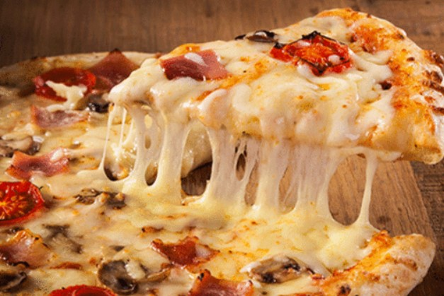

My favorite food is pizza. It's a classic dish that can be customized to fit any taste buds. Whether you like a meat lover's pizza or a vegetarian option, there's always something for everyone.
Check out this website for a recipe on how to make homemade pizza:
Chocolate is another one of my favorite foods. It's a sweet treat that comes in many different forms and flavors, from milk chocolate to dark chocolate. I especially love eating chocolate when I'm feeling down or need a little pick-me-up.
For dessert, nothing beats a cold scoop of ice cream. Whether it's vanilla or chocolate, I love indulging in this sweet treat on a hot day.